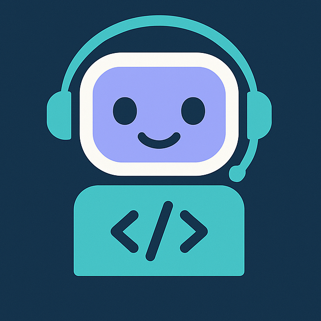

Projects



Hi, I'm Ankit Roy, a previous Software Developer Intern at Epic Systems with a passion for machine learning and app development. I enjoy building iOS apps, learning new technologies, and solving real-world problems through code. When I'm not working, you'll find me watching sports (soccer, basketball, and football), playing chess, and going hiking.
Specialization in Machine Learning